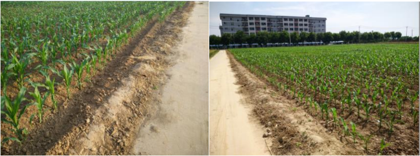

数字图像处理与分析是农业现代化中的一个重要的技术。为实现农田中的对象分类和语义标注，本文首先利用农田中场景不同对象的颜色特征，实现了农田图像的灰度化，以此为基础，分别利用K-means聚类方法结合阈值法，实现了农田图像的分割。然后利用直方图的相似度和颜色特征向量，基于支持向量机（SVM）分类器， 实现了未知农田图像中对象的分类及语义标注。论文对大田作业场景中智能农机的视觉环境感知的研究具有一定的参考意义。
研究目的与意义
(1)农业现代化与无人机技术发展
(2)农业图像处理在精准农业(Precision Agriculture )方面发展越来越迅速，使用信息技术，把空间的变化，定时，定位定量的实施农业技术操作和管理。可以精准的进行农药投放,利用机器视觉和图像分割技术实现对农田对象的分割和识别，可为定点变量喷洒提供参[MeyerGE2004]。
(2)农业图像处理在精准农业(Precision Agriculture )方面发展越来越迅速，使用信息技术，把空间的变化，定时，定位定量的实施农业技术操作和管理。可以精准的进行农药投放,利用机器视觉和图像分割技术实现对农田对象的分割和识别，可为定点变量喷洒提供参[MeyerGE2004]。
农田图像的获取和预处理
本文以西北农林科技大学北校区试验田的农业试验田为拍摄地点， 拍摄时间为 2015年 5 月 23 日每天中的不同时段不同光照条件下拍摄的 66 张图片, 分辨率为 4208*3120 保存为 sRGB 颜色空间以 JPEG 的格式保存.
